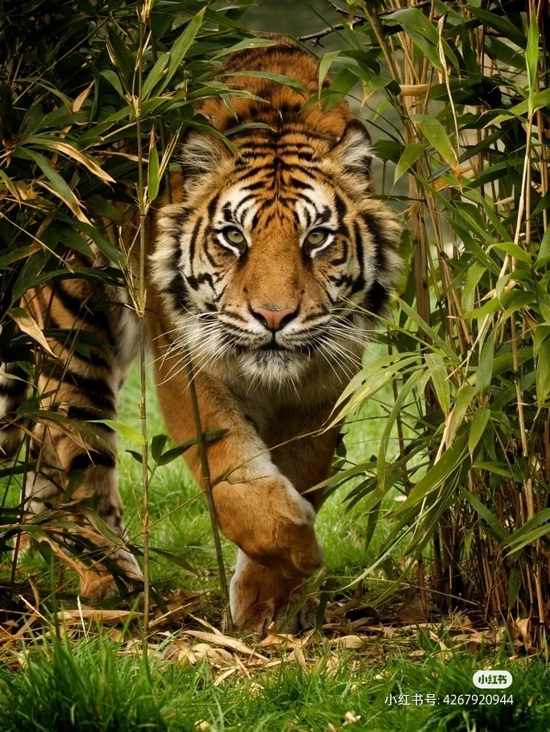

- 中文名
- 拉丁学名
- 界
- 门
- 亚 门
- 纲
- 亚 纲
- 猫科动物
- Felidae
- 动物界
- 脊索动物门
- 脊椎动物亚门
- 哺乳纲
- 真兽亚纲
- 目
- 亚 目
- 科
- 亚 科
- 属
- 种
- 命名者及年代
- 英文名称
- 食肉目
- 裂脚亚目
- 猫科
- 2亚科
- 14属
- 38种
- Fischer de Waldheim, 1817
- Felines、Cats
概要
猫科动物（Felidae）：是哺乳纲、食肉目、猫科动物下的动物。分为2亚科即猫亚科和豹亚科。共有14属38种。体型中、大，躯体均匀，四肢中长，趾行性。头大而圆，吻部较短，视、听、嗅觉均很发达。犬齿及裂齿极发达；上裂齿具三齿尖，下裂齿具2齿尖；臼齿较退化，齿冠直径小于外侧门齿高度。皮毛柔软，常具显著花纹。前足5趾，后足4趾；爪锋利，可伸缩（猎豹属爪不能完全缩回）。尾一般较发达。
猫亚科动物爪能伸缩，体型一般较小，不发出吼声，共有11属；豹亚科爪能伸缩，一般体型较大，能发出吼声。有3属。
猫科动物多数善攀缘及跳跃。大多喜独居。肉食，常以伏击方式捕杀其他温血动物。分布于欧亚大陆 、非洲、美洲的寒带到热带地区，由野猫（Felis silvestris）驯化来的家猫（F.s.catus）已被人为带到全世界，很多成为当地入侵物种。
详细描述
通过化石研究得到最古老的真正猫科动物（始猫）生存在始新世的时期。在始新世时，它演化出了假猫。假猫被认为是现存的两个亚科和已灭绝的剑齿虎亚科的共同祖先。较以马刀齿猫为知的这一群动物于更新世后期开始灭绝，其包括了剑齿虎、短剑剑齿虎、恐猫和似剑齿虎。第一种的猫科动物出现在大约三千万年前的渐新世，人们更熟悉的家猫和人类开始有关连则是在千年之前。猫科动物起源于类似猎猫类的原始类型，猎猫类形态和性类似如今的猫科动物而较原始，以前作为猫科动物的一个亚科，如今则多作为独立的猎猫科Nimravidae 。 猎猫科占据和猫科类似的生态地位，比较多样化，多数犬齿比较发达，其中有些成员如始剑虎Eusmilus 等发展出了类似剑齿虎的发达的上犬齿，是当时厚皮动物的主要捕食者。体态毛皮
大多数猫科动物都有斑点，条纹或玫瑰花纹，但其中一些，如美洲狮和狮子皮毛的颜色单一而均匀。有些物种的个体是黑色或几乎接近黑色。 [4]
每当优雅的猫科动物行走时，在它那修长而柔软的身体中强有力的肌肉在柔软又美妙的毛皮下流动着。而当它们停下时，身体的每条曲线都弯成优美的弧线。它们因此时而会给人留下慵懒的印象。而当它们放平它的耳朵一跃而起、亮出它的尖牙利爪进行攻击时，这个印象立刻烟消云散了。
如果和身体的其余部分做个比较，猫科动物的头部显得稍大。由于鼻子和下颌比较短小，和其他动物比起来，它的脸看起来较平，由此它们的耳朵显得大而引人注目。耳朵从根部往上逐渐减小，耳尖或圆或尖，并向上直立。 [5]
猫科动物的体表缺乏汗腺，在趾垫间、掌垫间、唇部、喉部、乳头区和肛门区等处均有发达的汗腺。脂肪腺很小，仅在上颌处。雄性在阴茎包皮处和尾上部较为明显。雌性有围绕肛门的脂肪腺和汗腺。雄性亦有肛门腺，肛门腺主要用来标记领域和用以吸引异性。
猫科动物中，生活在温度最冷的地方的动物皮毛最长（例如雪豹），老虎的皮毛的颜色范围很广，从黑色到橙色再到白色，许多物种的皮毛颜色暗淡，内有玫瑰花结，斑点和条纹， 可在寻找猎物时达到伪装目的。虽然有些变体（纯黑色）在许多物种中很常见，但完全白色的个体却很少见。单个物种内可能发生大量的颜色变化，新生幼仔的颜色往往与成体不同。